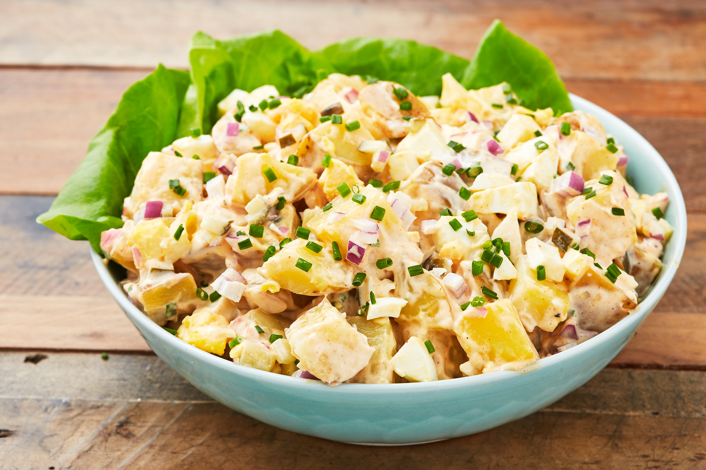

Home
Potato Salad
by Lauren Miyashiro

It's just potato salad
Ingredients
- 3 lb. Yukon Gold potatoes, chopped into 1” pieces
- Kosher salt
- 1 1/2 c. mayonnaise
- 1 small red onion, finely chopped
- 1 tbsp. Dijon mustard
- 1 tbsp. limon juice
- 1/4 c. chopped pickles
- 1/2 tsp. paprika
- 4 hard boiled eggs
- 1/4 c finely chopped chives
- Freshly ground black pepper
- Butterhead lettuce, for serving
Directions
- In a large pot, cover potatoes with water and season generously with salt. Bring water to a boil and cook until potatoes are easily pierced with a knife, 12 to 15 minutes. Drain and let cool slightly.
- In a large bowl, combine mayonnaise, red onion, Dijon mustard, lemon juice, pickles and paprika. Stir until well combined. Fold in cooked potatoes, eggs, and chives, then season with salt and pepper. Refrigerate until ready to serve.
- Serve over butterhead lettuce.